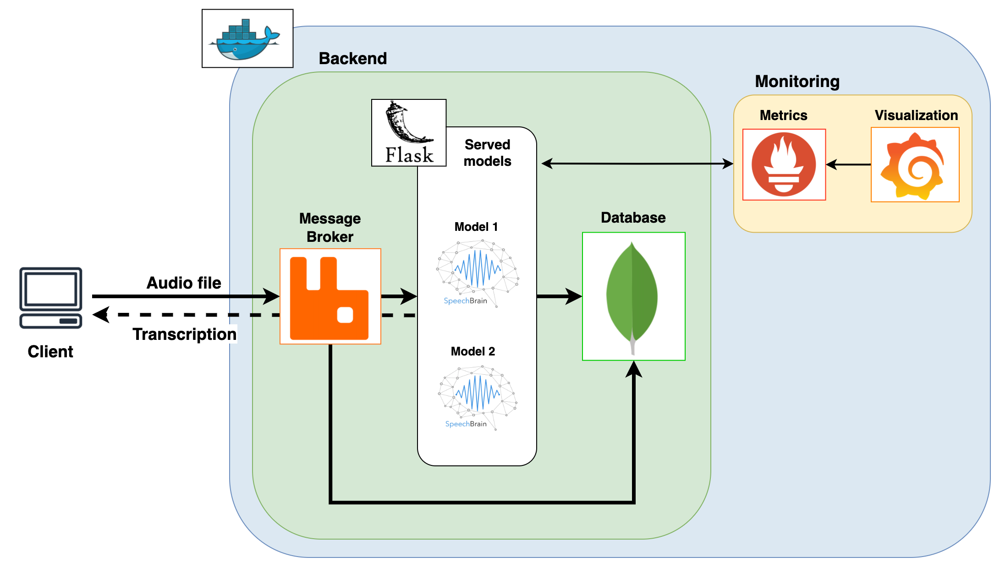

Working on the Vector Cluster (General Guide)
This guide provides the general process for getting access to and running jobs on the vector cluster.
Getting Access
An account on the cluster has already been made for you. You will just need to be able to login to get started.
Step 1: Logging In
You will receive an email from Vector with your credentials for logging into the cluster. The cluster is accessed using ssh so you can directly use the Linux/MacOS terminal or Powershell for Windows. If you want to have a more accessible environment, using an IDE like VS code is recommended. A quick guide for setting up VS code can be found here
apt install ffmpeg
or
brew install ffmpeg
To setup the environment and install dependencies:
Python virtual environment
python3 -m venv <path/to/venv>
source <path/to/venv>/bin/activate
pip install --upgrade pip
pip install -r reference_implementation/asr/requirements.txt
Deployment
To deploy using docker, make sure your machine has Docker and Docker compose installed.
In order to run all the microservices using docker-compose:
docker-compose up --build
In order to shut down the service and clean up the build cache:
docker-compose down
docker system prune
Flask app
To run the flask app, run the following command from reference_implementation/asr directory:
flask run
Client example
An example to showcase using the ASR service through a python program as a client, run:
python3 reference_implementation/client_example.py
Streamlit app
An example app using streamlit to serve as a frontend for live transcription, over the browser. Run the following command from reference_implementation/asr directory:
streamlit run streamlit_app.py
System Diagram

Components
Storage database for audio and results (MongoDB)
MongoDB is used as a document storage database, which can be used as a filesystem to store input audio files as well as transcribed results in JSON format. We launch the database as a service using a docker container. Our flask backend can communicate with the database to send and receive files along with results.
Message Broker (RabbitMQ)
RabbitMQ is a message broker that supports the creation of a queue for transcription. Any incoming audio file can be placed in the queue, and the message broker, will then create tasks to send the files to the respective models. The message broker (also popularly known as PubSub) prevents request timeouts and allows the ASR service to handle multiple requests asynchronously.
Backend Server (Flask)
Flask in python is used to create HTTP endpoints where transcription requests can be sent. There are three main endpoints:
queue_task - An audio file to be placed in a queue for transcription can be sent to this endpoint as a request. This endpoint can handle multiple requests asynchronously, and is managed by the message broker. If the service is busy, the transcription is placed in the queue as a task, which gets assigned when the model server is available.
instant_transcribe - An audio file to be placed in a queue for instant transcription. This endpoint attempts to transcribe an input audio file immediately after the request is received, and is not managed by the message broker queue. Hence, if the transcriber service takes too long, for example if the worker processes are busy transcribing a previous request or if the audio file is too large, then the current request would time out, and the task is marked complete yielding no results.
get_results - An endpoint to send requests to fetch previously transcribed results from the database. In this case, the user would need to input the unique document ID corresponding to the audio file that was previously sent for transcription.
Frontend application for live transcription (Streamlit)
Streamlit is a framework for building web apps using very simple python code. As an example, we use streamlit to showcase a simple application, which allows the user to speak into the microphone through the browser (frontend), the audio stream is then transcribed by the application, and the results are sent back to the frontend with minimal delay. This is a use-case of live transcription where the input audio is not stored, and there are no queues to manage requests. The streamlit app also has an option to upload an audio file, which the app then acts as a client, and sends it to the queue_task endpoint of the flask server.
Monitoring (Prometheus and Grafana)
We use Prometheus to showcase monitoring of the services, and collecting metrics. Monitoring becomes crucial when developing services that are meant to handle several concurrent requests, and when latency and load become bottlenecks.
Prometheus can be used to setup alerts when the service is down or is facing unusual loads or if there are network issues between the microservices.
Grafana is integrated with Prometheus to visualise the metrics through a graphical dashboard interface.
You can learn more about RabbitMQ monitoring with Prometheus & Grafana here.
(Optional) VS Code Setup
Here is how to setup VS Code for working remotely on the cluster